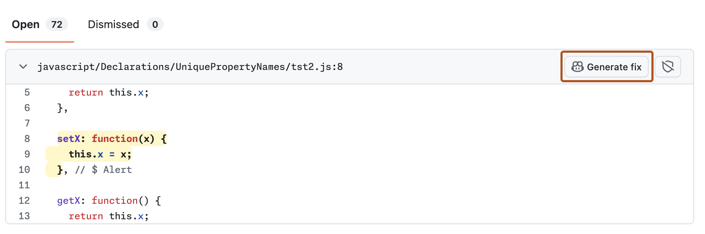

Review code quality findings, generate a Copilot Autofix, and merge a pull request to improve reliability and maintainability with GitHub Code Quality.
Introduction
GitHub Code Quality (public preview) helps keep your code reliable and maintainable by surfacing code quality findings in pull requests and on your default branch.
In this tutorial, you’ll learn how to identify and fix a code quality finding on your default branch, helping to improve your repository’s code health.
Prerequisites
GitHub Code Quality must be enabled for your repository and you must have code in a supported language. See Enabling GitHub Code Quality.
If you're enabling GitHub Code Quality for the first time, ensure you've waited a few minutes after enablement for a full CodeQL scan of the default branch to complete.
Review scan results for your default branch
In your repository, go to the Security and quality tab, click Code quality in the left sidebar, then click Standard findings to open the repository dashboard.
Here you'll see:
Ratings for the Reliability and Maintainability of your codebase, which help you understand your code health at a glance.
A results list of all the quality issues detected by a CodeQL-powered analysis on your default branch, which are grouped by rule and language.
Identify a high-impact finding
Use the dashboard filters to identify a high severity level finding ("Error" or "Warning").
Resolving these will have the biggest impact on your repository's ratings.
Inspect the details of the finding
Click the rule name itself to see a detailed view of the files and lines of code affected by that rule.
Once you're in the detailed view, click Show more to gather context and understand the results.
Generate a Copilot Autofix
To the right of a highlighted finding, click Generate fix.

Review the suggested fix, then click Open pull request.
Merge the fix
Carefully review the draft pull request. If you're satisfied with the proposed changes, and all checks and tests are passing, go ahead and merge the pull request.
Observe the metrics change
Return to the Code Quality dashboard ( Security and quality tab, then Code quality, then Standard findings).
Wait a few minutes for the next scan to complete — Code Quality scans automatically re-run after every push to the default branch.
Observe the change in metrics at the top of the dashboard:
The number of findings for "Reliability" or "Maintainability" should have decreased.
Your ratings for "Reliability" or "Maintainability" may have improved, if your fix addressed a number of high-impact findings.
You've successfully used Code Quality and Copilot Autofix to improve your repository's code health!
Healthy code is easier to understand, maintain, and extend, and remediating code quality issues makes your codebase more reliable, compliant, and accelerates future development.